LightingTroubleshootingGuide
Contents
- 1 About This Guide
-
2
General Lighting
- 2.1 Why Are My Shadows Black?
- 2.2 Invalid Lightmap Settings When Converting BSP to Static Mesh
- 2.3 What if I don’t want to have lightmaps at all or my game doesn’t need them?
- 2.4 Two-Sided Lighting for Single Sided Meshes, or Why does my light come through the roof?
- 2.5 Why does this look nothing like it did before, or Engine Scalability and you
- 2.6 Why is there a red “X” over my light?
- 2.7 Poor Lightmap UV Layout
- 2.8 The Power of Post Process Global Illumination Settings
- 2.9 Capsule Shadows
- 3 Dynamic (Movable) Lighting
-
4
Static Lighting
- 4.1 Lightmap Resolution / Shadow Quality
- 4.2 Shadow Seams/Shading Differences with Indirect Lighting
- 4.3 What is this “Overlapping UV error” non-sense when I build lighting?
- 4.4 How do I generate lightmap UVs in the editor?
- 4.5 How to control Global Illumination with Static Lighting?, or The Wonderful Thing About Bounce
- 4.6 Why is there shadow splotches on my static mesh?, or How to clean those dirty lightmaps?
- 4.7 What is the “Lighting needs to be rebuilt” in the Top left corner error?
- 4.8 Lighting Quality comparison, or Production > Preview
- 4.9 Lightmap Error Coloring
- 4.10 Find the Objects referenced in "Lighting needs to be rebuilt (X Objects)"
- 4.11 Light Build Statistics
- 4.12 Landscape Grasstype Asset Tiled Pattern
- 4.13 Build Lighting Via Command Line
- 4.14 Foliage Tool Lightmap Resolutions
About This Guide
Often the difference between a good game and a great game can come down to light. Even the best model rendered with poor shadow resolution and not taking advantage of the right post process settings will look poor. In the Unreal Engine, it means digging in to our robust lighting, reflection and post process settings. This Troubleshooting guide attempts to cover some of the more common problems that people come across when they first dig into the lighting and rendering systems. This guide is by no means meant to be completely comprehensive but a living document as the engine changes so too can we add and alter advice presented here. The guide is meant to be a great first step for artist trying to get the most out of the engine's rendering system.
Common Lighting Documentation pages for reference:
General Lighting
_________________________________________________________________________________________________
Why Are My Shadows Black?
In lighting terms, deep black shadows usually mean you have no fill light. This can often happen when doing outdoor environments where a single directional light is meant to represent the sun. UE4 has a built in method to provide a world effecting fill light, we refer to it as a Sky Light . Want to know more about Sky Lights?
-

No Skylight
-

With Skylight
_________________________________________________________________________________________________
Invalid Lightmap Settings When Converting BSP to Static Mesh
As of 4.6 and higher the default Lightmap Resolution will be set to 4 for any converted BSPs, but you will still need to follow the steps to set the correct Lightmap Coordinate Index.
When you convert your BSP geometry to a static mesh, you will likely see the following result:

Don’t worry, this is normal! Since we’ve now converted our BSP to a Static mesh we need to make sure the right lightmap channel is assigned. To make things easier, when you convert the BSP it will automatically generate your lightmapping UVs for you. The only thing that is not setup is automatically is making sure the right channel and resolution are assigned.
- To do this, open the newly created Static Mesh. Look to the details panel on the right and locate the tab Static Mesh Settings.
- Here you’ll need to set the Lightmap Resolution. This should be any power of two increment (ie. 32, 64, 128, etc). This will be the resolution of your lightmap texture. Higher lightmap resolutions will result in better shadow quality baked into the texture, but it will also increase memory foot print and light build times.
- Next we’ll set the Lightmap Coordinate Index to 1 (This is the lightmap UV channel in most cases). This is the location of our lightmap UV that will have no overlapping faces.
- If you want to see what the lightmap UV looks like you can click the button for the UV in the toolbar and choose UV Channel 1 from the drop down to the right of the button.
_________________________________________________________________________________________________
What if I don’t want to have lightmaps at all or my game doesn’t need them?
There may be times where a game doesn’t need lightmaps at all, because it’s been opted to use only Movable (Dynamic) lighting. There is an option to disable lightmaps all together by opening the world settings and checking the option for “Force No Precomputed Lighting.” When lighting is rebuilt it will remove all lightmaps that have been previously cooked.
There are two methods to disable Static Lighting:
Project Specific: Disable Static Lighting
- Menu > Edit > Project Settings
- Go to the Rendering Tab > Lighting Tab
- Uncheck the option for Allow Static Lighting
- To enable this option fully you will need to Restart the Editor
Level Specific: Disable Static Lighting

1. Open World Settings

2. Go to the Lightmass Tab
3. Uncheck
Force No Precomputed Lighting
4. You will get a warning. Click OK.
5. Build Lighting to wipe lighting data already stored.
_________________________________________________________________________________________________
Two-Sided Lighting for Single Sided Meshes, or Why does my light come through the roof?

In this image, you’ll see I’ve made myself an awesome wall and a tube that when I turn on its side can be a creepy tunnel for me to walk through!

All seems well and good and I can see that I’ve got my awesome work and I can see both sides of my mesh in my modeling program of choice. However, when it’s imported into Unreal Engine 4 it’s messed up!
So, what gives, because this surely cannot be right?!
This is actually 100% normal (pun intended). Even though the plane looks good the back face is not being rendered just like the closest faces of our tube mesh.

When you create your geometry in your modeling program by default the software has set it so that you can see both sides of your geometry.
In UE4 the back face of a polygon is automatically culled to save on performance because every little bit helps! It’s not always necessary to have extra polygons or render sides that may not be needed, otherwise, there would be extra draw calls that could slow down your performance. with a few instances, this probably wouldn’t matter much, but when you’re developing for specific platforms or have a lot going on every draw call starts to matter.
To also understand why we can only see one side we can open our mesh in the static mesh editor and tick the toolbar option for “Normals.” You will see Green lines that point in the direction the face of the polygon is directed. In the image below for our tube asset, we can see that the faces where it’s invisible have the lines going towards the center of the mesh. This is the direction that the visible face can be seen.

Pro Tip: While in UE4 if you have any meshes that have what appears to be invisible geometry or missing faces you can check the normals here before fixing the issue in your modeling software.
Now that we have all the boring stuff out of the way we can get right to fixing our invisible faces with some checkboxes and Materials.
1. (STATIC ONLY)Light as if Two-Sided
-
-
- Enabled this option via the details panel for the selected asset in the Level Viewport.
- With this option selected when lights are built lightmass will calculate that geometry into its bake. It will cast a shadow, even though we cannot see it from this angle, to bake into the lightmap texture. This will not work with a movable/dynamic light though since Unreal Engine 4 uses a deferred rendering pipeline.
-
-

Asset's Details Panel in Level Viewport
-
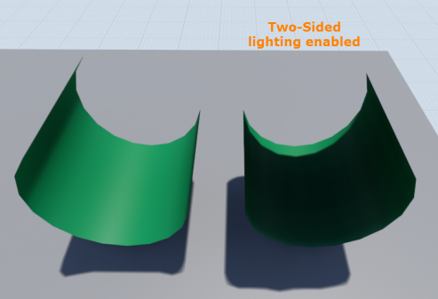
Final Results
2. Creating a Two-Sided Material
-
-
- Open the material editor and in the details panel on the left select the option for “Two-sided”.
- Save and compile your material for this to take effect.
- This method can be used with Static/Stationary/Movable lighting. Since the material is now being rendered the faces of that were not visible before are no longer being culled and can block the light. Be aware though that this now renders both sides of the mesh adding to your draw calls. As mentioned earlier this won’t necessarily affect performance in smaller scenes or setups, but if you’re targeting hardware where every bit of performance counts this can affect that.
-
-

Material Attributes Details Panel
-
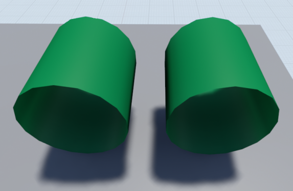
Final Results
_________________________________________________________________________________________________
Why does this look nothing like it did before, or Engine Scalability and you
The Engine Scalability settings can be accessed via the Settings > Engine Scalability option in the Toolbar.
The purpose of this is to scale the engine rendering settings to fit machines that may have a more difficult time running smoothly. By default, the editor will lower settings here if the FPS drops too low.
There is an option for “Shadows” that will directly affect the shadowing distance of any movable (dynamic) shadows. This is true when the list is set to “Movable” or when lighting has not been built for the static lights yet, since those are using dynamic shadows as temporary indication until your lights are built and baked into lightmaps.
The images below will demonstrate the shadow distance of each Shadow setting in the Engine Scalability tab.
-
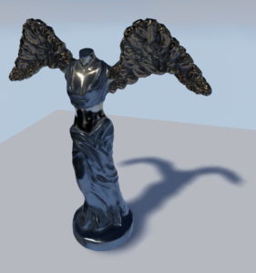
Epic
-

High
-

Medium
-

Low
If there are no shadows in your level this is the best place to check first. Even if your system is top of the line these settings can still be automatically set to a lower setting and stay there if the FPS drops too low. It’s a good place to always check before looking at other issues that may be a factor.
If there is a need to not have the auto-scaling on it can be disabled by unchecking the option at the bottom of the Engine Scalability settings window. Do realize that this can cause performance issues as the editor will no longer monitor when there is a need to adjust this to a lower settings to help keep performance up.
Want to know more about Engine Scalability? _________________________________________________________________________________________________
Why is there a red “X” over my light?

Stationary lights are limited to a maximum of 4 shadow casting lights being overlapped. When the 5th is added there will be a red ‘X’ indicating that the light in this area of overlapping with the smallest radius will revert to a dynamic light. This can cause performance issue because dynamic lighting that casts shadows is more expensive to use then baked lighting.
If lighting is built with any stationary lights that are overlapping offenders there will be a warning detailing which light is the offender and the ramifications.
To correct this make sure that there are no more than 4 shadow casting overlapping Stationary lights in a single area. This may require the removal of a light, disabling the Cast Shadows flag or adjusting the radius so that it’s no longer overlapping.
If there are only three placed stationary lights and there is a red X over the 4th light make sure that you have no other stationary lights in your level that would be overlapping. Often times this would be the Directional light set to Stationary that is causing this issue.
Want to know more about Stationary Lights?
_________________________________________________________________________________________________
Poor Lightmap UV Layout
The key to getting a good lightmap bake is by having a proper setup for your light map so that it effectively uses the 0-1 UV space. When you go outside of this space or have faces that overlap each other you will see the dreaded “Lightmap Overlapping by xx%” in your Map Check warnings!
The documentation that we have on properly setting up a lightmap is a good place to start reading. Read all about Lightmapping in UE4 here.
Here are some key things to remember when setting up your lightmap:
- No Overlapping faces
- No faces outside of the 0,1 UV space
- Flat-Mapping is not the best approach and often will lead to many errors with your lightmap
- Use as much of the 0,1 UV space so that there is no wasted texture space.
- If you have a large and potentially complex mesh it is best to break it up into parts for a good lightmap resolution and for other performance reasons like Occlusion Culling.
- Use as low a lightmap resolution as you can to save runtime texture memory.
- Make sure that your UV islands have at least a 2 pixel spacing between them to prevent light bleed. Account for this based on the target resolution of your lightmap.
_________________________________________________________________________________________________
The Power of Post Process Global Illumination Settings
The Post Process Volume can be a very powerful tool in your scene when it comes to lighting, especially statically lit areas. You can easily control this by adjusting these settings in your Post Process Settings.

In this simple example below this is all controlled with an emissive material for the rod, a dim point light for the room, and two post process volumes that overlap! This is a very cheap way to fake some dynamic GI with your post process!
Setup:
- Very dim Point light for some soft ambient light in the room.
- Moving Rod has a simple emissive material applied with a multiplier to control how bright it is.
- There is one Post Process Volume surrounding the scene that is using default settings, which isn’t needed really unless you plan to have other settings changed for your basic scene.
- Second Post Process Volume that is attached to the Rod as it moves into and out of view. It is slightly larger than the Rod in length so that there is some overlap. There have been three settings tweaked in this to make it work smoothly.
- The Indirect Lighting Color has been set to a lighter but similar color to that of Rod emissive color.
- The Indirect Lighting Intensity has been adjusted to make the room feel like it’s having this emissive light cast onto it.
- The Post Process Volume’s Blend Radius was used to blend the two volumes for a smooth effect of the light bleeding into the room.

This was all controlled with a Post Process Volume and static lighting! Being able ot control the bake GI can offer much more control over your scene if you need to make some stylistic choices and can help save from having to rely solely on light builds to look 100% accurate.
_________________________________________________________________________________________________
Capsule Shadows
Capsule Shadows are a new feature for 4.11 and higher that allows skeletal meshes to blend in better in indirectly lit and directly lit areas with soft shadowing.
The tutorial on this page can help you get started if you’ve not used them.
http://timhobsonue4.snappages.com/lighting-capsule-shadows
_________________________________________________________________________________________________
Dynamic (Movable) Lighting
_________________________________________________________________________________________________
Shadow bleed or Incorrect Shadow Quality
In this guide, we’ll look at areas that will help improve the quality so that the shadows more accurately fit the meshes. This will also help in offering tips to improve dynamic lighting at a distance.
-

Example of Shadow Bleed, or Incorrect Shadow Quality
Directional Light ONLY: Cascaded Shadow Maps Settings:
-

Cascaded Shadow Maps Settings, in Directional Light Details
Dynamic Shadow Distance Movable
: This is the distance from the camera that shadows will cover. A value of 0 disables this.
Dynamic Shadow Distance Stationary
: This is the distance from the camera that shadows will cover. This is set to 0 by default for Directional Stationary Lights
Num Dynamic Shadow Cascades
: This is the number of cascades the view frustum will be split into. More cascades will result in better shadow resolution, but will add significant rendering cost. To read more on view frustums take a look at this article:
http://en.wikipedia.org/wiki/Viewing_frustum
- Num Dynamic Shadow Cascades (In these examples Shadow Bias, covered later, has been set to 0 to more visibly see the cascades.)
-
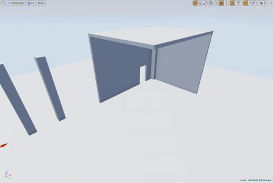
Cascade Number = 0
-
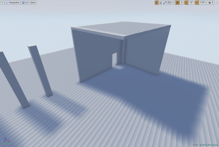
Cascade Number = 1
-
Cascade Number = 2
-

Cascade Number = 3 (Default)
-
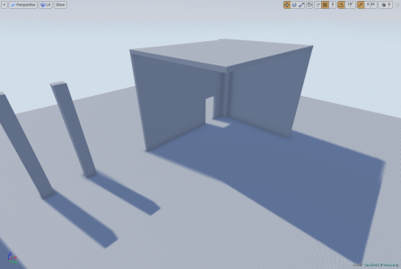
Cascade Number = 4
Cascade Distribution Exponent : This controls whether the cascades are distributed closer (higher value) or further away (lower value) from the camera. A value of 1 means the transition will happen proportional to their resolution.
- Cascade Distribution Exponent
-

Distribution = 1
-

Distribution = 2
-

Distribution = 3
-

Distribution = 4
Cascade Transition Exponent : This controls the proportion of the fade region between cascades. Lower values will give a hard edge between the shadow cascades whereas higher values will blend between the two.
- Cascade Transition Exponent
-

Transition Effect
- Cascade Transition Exponent
-
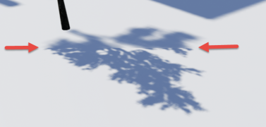
Hard Edge (Lower Value)
-

Blended Edge (Higher Value)
Shadow Distance Fadeout Fraction : This controls the how the shadows fade out at distances. Higher values will fade the shadow out whereas lower values will leave a darker shadow at distances.
- Shadow Distance Fadeout Fraction
-
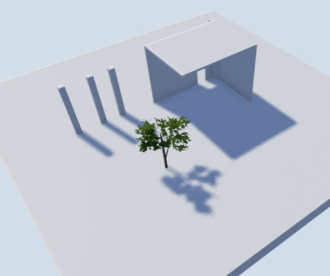
Fadeout = 0
-
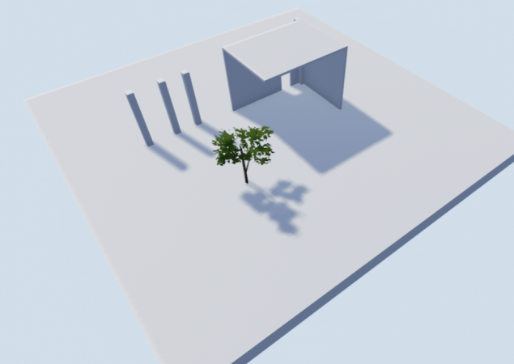
Fadeout = 1
Far Shadow
The option to set the Far Shadow for a static mesh or Landscape gives the added benefits of being able to have cascaded shadow maps work for very far distances, instead of the limited range closest to the camera.

This is controlled by enabling the Far Shadow Cascades in the Directional Light settings under Cascaded Shadow Maps.
You can set the number of Far Shadow Cascades to be used along with the distance that Actors with the Far Shadow flag enabled on should consider shadowing. For this default setting it’s using 300 meters as the start distance. This value should also be a higher distance than the Cascaded Shadow Map Distance closest to the camera.
Also, keep in mind that this is best used for large objects in the distance and is not recommended to be used on every mesh you have. This can have significant performance implications and is why you have to opt in on each static mesh you want to use Far Shadows

In this setup, the Dynamic Shadow Distance of the Directional Light has been set to 5000 units and the far shadow distance is set to 50000 units with 4 far shadow cascades.
The static mesh on the left is not using the Far shadow and the one on the right has far shadow enabled.
Adjusting Cascades for better Quality:
Shadow bleed and accuracy can be finely tuned by adjusting a combination of the settings demonstrated above. This next section will attempt to adjust the values that work best to get better accuracy with the shadows while in close proximity and as the camera moves away. Finding a balance that works with any particular game will require time, effort, and lots of testing with what works and what does not.

Here is the basic scene with only default settings:

There are already a few problems that are prevalent in this scene with shadows accuracy around edges.
More clearly demonstrated here.
By focusing on the most of the effort around the
Cascade Distribution Exponent
the shadow bleed can be minimized, within reason of course. The default distance for Dynamic shadows is set to 20,000 units. This isn’t always necessary to which this can be set to a lower value to better utilize the cascades.
If the game level is to use indoor and outdoor scenes finding a combination that fits all or most areas will be difficult and require lots of tweaking. There is no one setting that will make everything look perfect.
In this scene by adjusting the settings for the Distribution, the Shadows Distance, and Number of Cascades the bleed and accuracy are acceptable.
All Dynamic Lights (Light Tab Settings):
Lastly, there are two other settings under the light tab in our light source that can benefit lighting accuracy as well.
These settings can be found here:
-
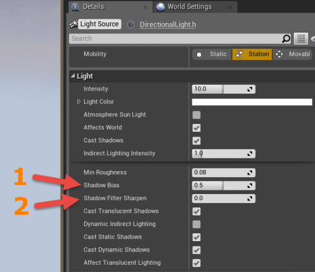
Lighting Details, Shadow Bias and Filter Sharpness
Shadow Bias
will control how accurate shadows are in the scene, but will generate artifacts if set to a value that is too low. The default value is 0.5 which is a good tradeoff between how accurate and effective it is.
Shadow Filter Sharpness
can help mask some of the artifacts that occur with lower values and this directly contribute to how sharp the edges of the shadows are as well.
Taking into account that none of the previous settings have been adjusted for these images these are some examples to demonstrate Shadow Bias and Shadow Filter Sharpen .
- Shadow Bias
-

Shadow Bias = 0.5 (Default)
-
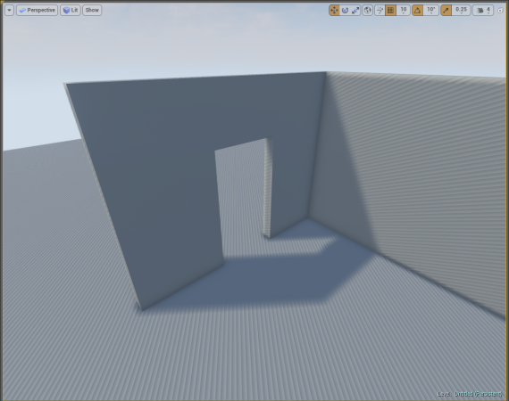
Shadow Bias = 0, adjusted too low will result in artifacts
The key here is to find a good balance without going too low and using the setting under the tab for Cascaded Shadows.
- Shadow Filter Sharpen, will sharpen the edge of the shadow with higher values
-
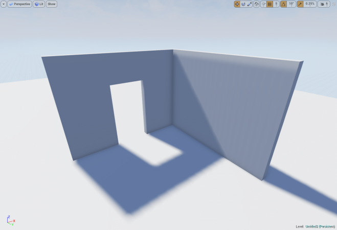
Filter Sharpen = 0
-

Filter Sharpen = 1
Most notably the higher the value for the sharpen filter the shaper your shadows. The soft edge created by the lower values will now be lost. _________________________________________________________________________________________________
Why does my Movable light shine through my mesh at far distances?
Dynamic lights, especially point lights, cause this kind of issue to crop up. Unreal Engine 4 does a good job of trying to optimize things so that you don’t have to worry about it so much. The problem is sometimes it gets carried away and can cause things like this to happen that may not be obvious how to fix.
-

This is what we want, Close to Camera
-

At a Distance from Camera
So, what gives?!
To explain this we need to discuss that awesome optimizing the engine does for you. The engine uses scene depth to determine what should be visible and what shouldn't be visible for rendering. Since we have a point light here that shoots light throughout it’s set radius when the mesh is beyond its bounds it will be occluded or no longer rendered. This causes the issue that we’re seeing with our light starting to cast in all directions.
You can see from this image that as the camera is further away the occlusion of parts of the mesh start to halo around the outer edge until the light is free to cast in all directions.
-

Mesh Light Occlusion
You may notice that if you select the mesh when far away that the light returns to normal. This is expected as you have just selected the mesh and it is now focused.

To keep the mesh from being occluded you’ll need to select the mesh and go to the details panel. Here you can search or scroll for the “Bounds Scale” (Located under the Tab for Rendering.)
The default value is set to 1.0. When increasing this scale be sure to only use incremental small numbers. Using a value of 2.0 doubles what the distance was set to which can be overkill. Try increasing by smaller incremental values. (ie. 1.1, 1.2) There is no need in pushing to have more than you need as this can impact performance and shadow quality.
You can visualize your meshes bounds by going to the viewport > Show > Advanced > Bounds
You will see something like this:
Additional notes:
If you’re having issues with your mesh occluding, but don’t want to increase the bounds scale due to performance concerns you can try using a Spotlight. Since this only casts light in a single direction you won’t notice the light of a point light casting in all directions when the mesh is occluded. This works well for situations similar to what has been demonstrated, but testing may need to be done on your part to get things just right.
Alternatively, you could forego a fully movable/dynamic light and use a stationary light that bakes a lightmap texture, which can also save on performance by having zero overhead during runtime for rendering shadow information. _________________________________________________________________________________________________
Static Lighting
Lightmap Resolution / Shadow Quality
Every project has its own unique art direction and goals, so this section is meant to present common concepts and give you a foundation to begin achieving what you want from your static lighting. By no means will the settings we present here work all the time for every project.
-

A Sample Scene with 3 Static Meshes
There are 3 objects in this scene; two walls and a floor mesh. Each object has is own shadows that are baked into a texture known as a lightmap. This lightmap stores any shadow/light information that is being cast on to it in this texture. It is normally handled by an artist in the asset creation. ' Want to know more about lightmaps and how to create them effectively?
In other words, If I wanted to increase the resolution of the shadow cast by the wall with the doorway, I would not adjust the doorway, but instead would adjust the floor’s lightmap resolution. This is where the shadow is being cast and baked into a lightmap.
Now with that out of the way, we may need to increase lightmap resolution for some meshes and not others. Each mesh has it’s own lightmap Resolution that can be set via the details panel when the mesh is selected or via the mesh editor.
For this lightmap quality demonstration we’ll look at the floor meshes lightmap resolution only.
When adjusting LM resolution make sure it is using a power of two (32 [default in engine], 64, 128, etc) with exception of BSPs (Covered below)
A lot of the quality in this lightmap resolution will depend on two factors: Size of the mesh and the size of the UV shells in the lightmap UV.
- Lightmap Resolutions for Static Meshes
-
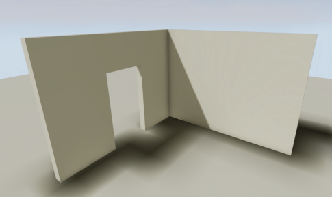
Resolution = 64
-
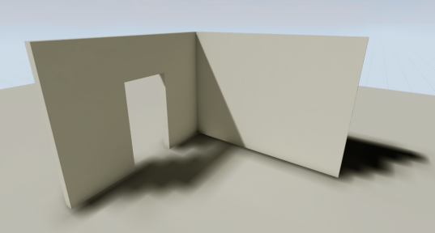
Resolution = 128
-
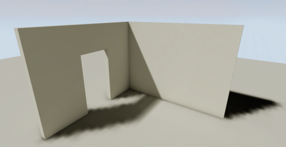
Resolution = 256
-
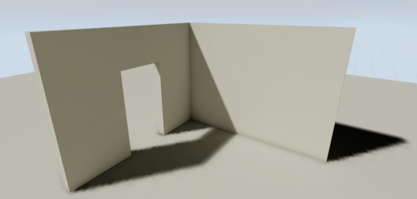
Resolution = 512
The key to difference to note about using lightmaps on BSPs versus Static Meshes is that it doesn't increase, but instead decreases to get better resolution.
- Lightmap Resolutions for BSPs
-
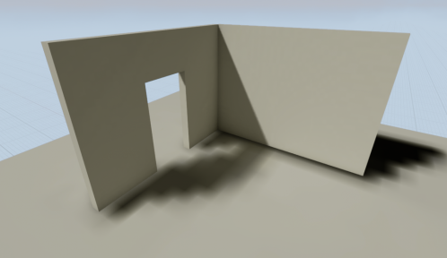
Resolution = 32
-

Resolution = 24
-

Resolution = 16
-

Resolution = 8
While adjusting the lightmap resolution to get better results there are trade offs here. Using a smaller mesh will allow you to get better results for the floor with a lower lightmap resolution, while using this larger mesh you will need to increase the lightmap resolution and the texture will use more resources for your games.
- Lightmap Resolutions for Landscapes
-

Resolution = 1.0
-

Resolution = 2.0
Much like the difference between BSP and Static Meshes for setting the static lighting resolution Landscapes are a slight bit different as well. Landscape Lightmap Resolution uses a multiplier that can be used to give better resolution for the baked shadows. Larger Landscapes may require a higher resolution value, where as smaller landscapes will not.
In the Details panel you have the option to increase the Static Lighting Resolution , which is set by default to 1. When you adjust this you only need to incrementally increase by a whole number until you are at the desired resolution you would like. _________________________________________________________________________________________________
Shadow Seams/Shading Differences with Indirect Lighting
Often when you build lighting for your project and in indirectly lit areas you may notice that there is sometimes a shading difference between modular planar surfaces, typically walls, floors, and ceilings. This is an unfortunate side-effect of how static indirect lighting is handled at the moment and doesn’t have an easy way to fix. This can hopefully be made better in the future.
Here’s the breakdown of the issue, if you’re not familiar.
- Light hits a surface and then that light is bounced on the surrounding surfaces. This type of bounce light is referred to as Indirect Lighting. Some surfaces will be directly lit as well while still receiving some bounce, like the Wall that is partly lit fully and has some indirect lighting with the shading issue in the shadowed corner.

- If the surfaces receiving the indirect lighting are flat planar surfaces they generated this disparity in shading between them like this:
What’s happening here is that each of these static meshes are sent to the CPU to be processed in the order they are received and on different CPU threads. This simply means that while each one has their lighting built by lightmass the others don’t know what the shading for the one before it would look like to reference the edges to make sure they match up. This leads to slight shading differences between each planar surface.
So, by now, you’re wondering “What can I do about this?!”, right?
In the World Settings under the section for Lightmass you can adjust some of the settings here to get better results.
- Indirect Lighting Quality can be set to 2 or higher.
- Indirect Lighting Smoothness can be set to usually a range of .65-.75. The lower the value here is though the more artifacts you can run into that make the lightmap look like it has blotchiness to it.
- (Recommended only for Advanced Users!!) Static Lighting Level Scale can be adjusted to a lower value to get better blending as well. But this changes the scale of how lighting is calculated for the entire level. This will increase build times significantly if the value is lowered but will give you better results. This is commonly used by those within the Architectural Visualization field and not by those developing games unless they have a specific reason and understand the choice.
When you adjust the quality of indirect lighting it’s always a good idea to lower the lighting smoothness to get better results. This helps blend better between these surfaces, but it doesn’t necessarily help remove the issue completely and can have other side-effects as well. You should really test it in project or a test map to fully understand what you’re adjusting here and why.
There is also some steps you can take to reduce how noticeable this artifact is and steps you can take with the design of your project.
- Try not to over-modularize your levels! This is important. You may think that making a moderately sized wall into nice smaller concise pieces that you can pack together like Lego’s is the best thing ever, but you run the risk of this shading difference happening, and you now have many more actors that add to draw calls and checks for the visibility states of these. It’s best to have have a single wall when it makes sense rather than many small pieces. You get reduced draw calls and less issues that can occur with lighting.
- You can simply use other geometry to better hide these pieces where there would be seams, like columns or adjoining walls, or wall molding.
_________________________________________________________________________________________________
What is this “Overlapping UV error” non-sense when I build lighting?
When using static or stationary lighting it is imperative to use two UVs for your meshes otherwise you will get the following warning when you build lighting:
-

Message Log, Lighting Results
This means that you’ll need to setup a second UV channel for your lightmap otherwise the editor will use the existing texture UV as the lightmap which can lead to these kinds of errors.
This can be fixed by adjusting the UV for the lightmap so that there are no overlapping faces.
This can be done in the editor via generating lightmaps or by using your modeling software of choice to create and edit your UVs.
- Original UVs and Results
-
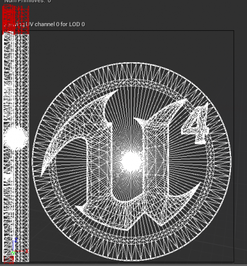
Overlapping UVs
-
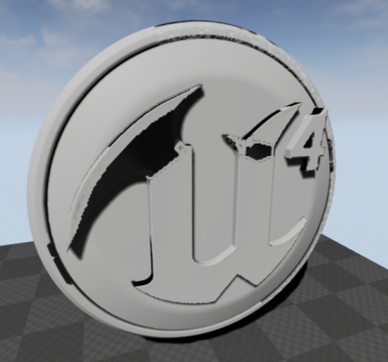
Results in Editor
- Corrected UVs and Results
-

Corrected UVs
-

Results in Editor
Take notice that the UV in the final result has no overlapping faces which allows shadow/light information to bake correctly for the texture that will be applied to our mesh after the light build.
With the overlapping faces these will give incorrect shading due to lighting information not being baked correctly. _________________________________________________________________________________________________
How do I generate lightmap UVs in the editor?
With the release of 4.5 the editor will automatically generate UVs on import or by using the mesh editor.
We will assume you’re wanting to set them up from the mesh editor.
- Open the mesh you’d like to create a lightmap with.
- Locate the panel on the right that looks like this:
-

Static Mesh Editor Details Panel
This panel will allow you to create your lightmap channel, but do note that this does not directly control your lightmap resolution or it’s coordinate index assignment. These will be covered a little later.
The settings here in the “Build Settings” tab that we will focus on are:
Min Lightmap Resolution
= This is the smallest size you would want your lightmap resolution to be.
Source Lightmap Index
= This is the source which we will generate our lightmap UVs from.
For most assets this should be a good setup. The key here is making sure that we select the proper source lightmap index. This is the UV that is typically used for the textures. The UV shells/islands in this UV will be repacked so that there are no overlapping faces, which is integral to using lightmaps.
For the lightmap resolution setting a low value to begin with is not bad because we are not obligated to using that resolution. If you decide to use a higher resolution you do not need to come back to these settings unless you know it could improve the lightmap bake. In most cases it’s not necessary.
Once you’ve hit “Apply Changes” we can verify our lightmap has been created and see if there appears to be any errors.
You can do this by going to the mesh editor toolbar and clicking the UV icon to show the UV and using the drop down to the right to select UV channel 1 to view our newly created lightmap.
It should look something like this:
-

Static Mesh Editor, UV Channel Selection
That’s not quite it though. We still need to assign the correct UV channel to be used for our Lightmap.
In the mesh editor in the details panel on the right locate the tab labeled “Static Mesh Settings”

- In this tab we’ll need to adjust the lightmap resolution for what we’d like here.
32 is the default lightmap resolution. For smaller objects this would work well. For larger objects we would possibly need to use higher resolutions.
Make sure to adjust it by a power of 2. (ie. 32, 64, 128, 256, etc)
- The next setting we’ll need to verify is that the Lightmap Coordinate Index is now pointing to the right channel. Make sure this is set to the channel that you set in the build settings above. Typically this should be set to 1.
After using these settings you will now have a proper lightmap resolution.
There are some caveats to this though that may require the use of a modeling program like Blender, 3Ds Max, or Maya to fully correct the issue.
The generated lightmaps will not split or cut seams in the existing UVs from UV channel 1 used for the texture. It will only repack the existing UV layout to better fit the needs of a lightmap UV.
As an example, think of a cylinder. If you wanted to lay these faces all out flat you would need to cut a line in the side of the cylinder to do so. In a modeling program this isn’t always necessary depending on how you’ve set up the texture UV to be used. If this side face was not cut to be laid out flat the generated UVs via the mesh editor will not work and will still result in overlapping UVs warning being generated after a light build. _________________________________________________________________________________________________
How to control Global Illumination with Static Lighting?, or The Wonderful Thing About Bounce
When using static lighting you will need to build lighting to see the results. Lightmass is used to compile and generate textures that will store this light and shadow information for our scene by baking this information into a lightmap texture.
By default lightmass is set to use 3 light bounces to get GI with static lighting. If more is needed we will need to directly change the lightmass settings to get different results via our World Settings tab. We can affect our Global Illumination directly by changing the number of bounces that the light will cast.
To enable World Settings tab you’ll need to go to the Toolbar and select Settings > World Settings
-
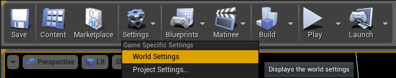
World Settings

Click on the World Settings tab next to the Detail Panel tab on the right side.
Here you’ll see a lot of settings that can affect how our light is handled with lightmass that will directly affect our scene. For GI we’re only going to focus on the second option down “Num of Indirect Lighting Bounces.” The slider is clamped to be a value between 1 and 4. You can override this by manually typing in a value though.
The default settings are shown to the right.
- Global Illumination Sample Scene, Single Point Light at 250 (≈ 15W Light Bulb)
-

Scene Setup
-
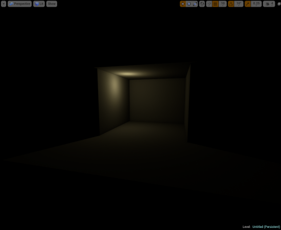
0 Bounces
-

1 Bounce
-

2 Bounces
-
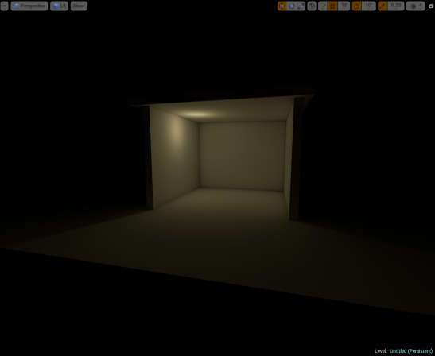
3 Bounces
-

4 Bounces
-
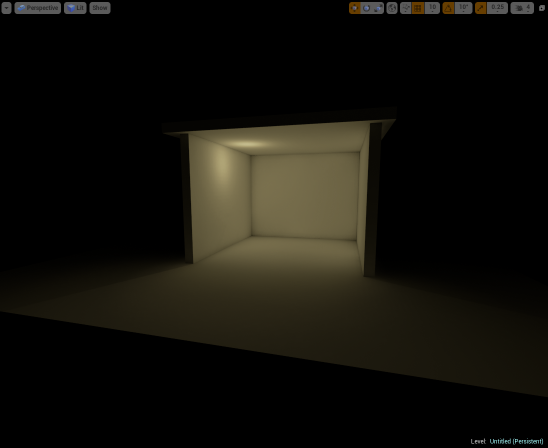
100 Bounces
_________________________________________________________________________________________________
Why is there shadow splotches on my static mesh?, or How to clean those dirty lightmaps?
Show stains, splotches, dirtiness, or whatever name you have for it is a common issue with UE4 when using any type of static lighting. Fear not though because we can get rid of those dirty lightmaps with a little scrubbing through our lightmass settings.
First though, the reason you see something like this is related to the indirect light from our GI bounces that happen with our lightmass build.
To replicate this in a mostly effective way this simple scene will have two rooms.
- Sample Scene
-

Exterior
-

Interior
This scene will be using PRODUCTION quality for our light builds. This scene is using assets from the Starter Content pack that can be added to any newly created project. All meshes in the scene will use a lightmap resolution of 256 unless otherwise noted. The post process effects are set to default with eye adaptation to make the darker room easier to see.
After building our lighting, here are the results:
- Initial Lighting Build, default settings
-
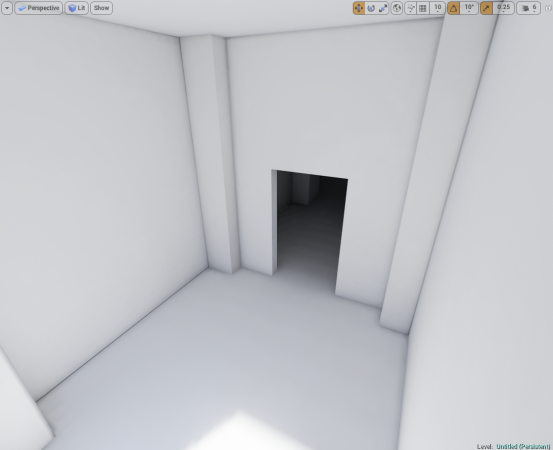
1st Interior Room, lit with direct and 1st bounce lighting
-

2nd Interior Room, lit entirely with indirect lighting
Brute force can be used to remove some of the indirect lighting artifacts by increasing the lightmap resolution which effectively increases the size of the textures used to store the lighting and shadowing information, but that’s not always the best idea when a high-quality result can be achieved using a lower resolution and adjusting the lightmass settings. When dealing with any rendering application in the engine and especially lighting just increasing a texture size, though it may appear to solve the issue is not always the most performance friendly way to handle an issue and may even result in more problems further along in your development process.
As any example this is the same 2nd Interior Room with lightmap resolution changed to be 1024:
- Initial Lighting Build, default settings
-

2nd Interior Room, Lightmap Resolution 256
-

2nd Interior Room, Lightmap Resolution 1024
In this example, a lot of the artifacts have been reduced by using the higher lightmap resolution, but this also increases the texture memory footprint by a factor of 4. There is a more performance friendly solution to these Indirect Lighting Artifacts with some simple adjustments to the World Settings.

- You can locate World Settings here:

- Here the settings for Lightmass can be adjusted:
Indirect Lighting Smoothness
: This is the smoothness factor to apply to Indirect Lighting.
-
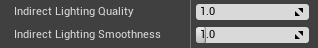
-

-
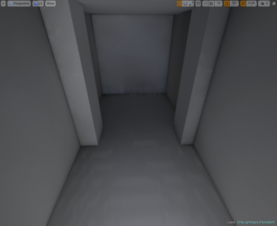
Default Settings
-

Settings Example #1
As mentioned in How to control Global Illumination with Static Lighting?, or The Wonderful Thing About Bounce, you may also want to adjust the number of indirect light bounces which will yield the following results:
-

Num Indirect Lighting Bounces = 4
-
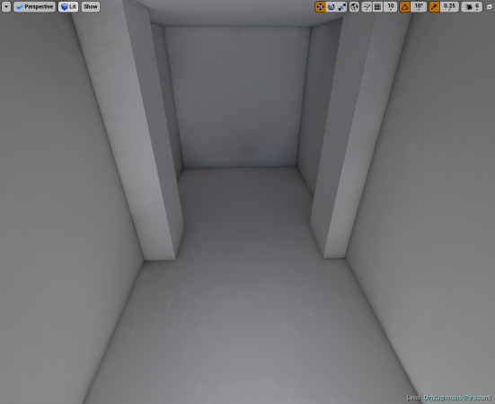
Num Indirect Lighting Bounces = 5
At this point, the lighting settings have been adjusted enough that there may be room to hide any artifacts with some textures, but if that’s not the option there is the option to bump the lightmap resolution for each mesh up to a higher value. The value used here is 256 for the lightmap resolution. By changing it to be 512 we get the following result:
-

Adjust Indirect Settings with 512 Lightmap Resolution
-

No Adjustment to Indirect Settings with 1024 Lightmap Resolution
In the beginning of this tutorial, there was a comparison shown using Lightmaps of 1024 that helped get rid of the artifacts. By adjusting a few lightmass settings the artifacts have been reduced and the assets are using a lower texture resolution with better results.
While this method is fully exploring the option of not having any light in this room and looking at ways to reduce the “dirtiness” artifacts that can be caused by Indirect Lighting it must be noted that using lighting can in these areas, even a very low-intensity non-shadow casting light, can get results as well. The methods listed above are a starting point and may require a little trial and error to get the results that are more appealing.
Want to know more about Lightmass Basics?
Want to know more about Lightmass Global Illumination?
_________________________________________________________________________________________________
What is the “Lighting needs to be rebuilt” in the Top left corner error?
If this is appearing in your top left part of your viewport window when using PIE (Play in Editor), Simulate, or Standalone game this simply means that lighting needs to be rebuilt for your scene. This will only affect Static and Stationary lighting. Dynamically lit scenes do not need to have lighting built.
This warning is caused when lighting has been invalidated by moving or modifying a light Actor. This can cause problems because the rendered lighting in the level is not accurately representing the current state of lights in the level. This error can be solved by going to the Build menu and rebuilding lighting for a map.
Troubleshooting Tips
Unbuilt Actors List
Sometimes may find that you have built the lighting but continue to see this warning popping up with a number of unbuilt objects but no direct way to identify which ones.
You can open up the Output Log window from the from the Developer Tools menu. Enter in the command DumpUnbuiltLightInteractions to be given a list of any Actors that are not having their light built or either have had their lighting invalidated.
This list of Actors can be really helpful to determine what is going on. It could be as simple as having a Blueprint that is set to static but has a movable component or you have an Actor that is placed via the construction script but then moved after lighting has been built.
Statistics Window
Open the Statistics window by going to Window > Statistics. This can be a helpful tool for determining information about your lighting build and information about all your static meshes in your scene that have their lightmap resolutions set. It's a good tool for troubleshooting exactly how long specific actors took to build during the lighting building process. This can easily help identify the offenders for a long light build time if something is being slow.
_________________________________________________________________________________________________
Lighting Quality comparison, or Production > Preview
When lighting needs to be built for a level the quality of the light build for lightmaps can be set in the toolbar by going to the options for Build > Lighting Quality > and selecting a quality level.
By default the Quality is set to Preview . This setting has the fastest computation time whereas Production will have the slowest computational time, but be much more accurate.
The Lighting Quality settings can be found here:
-

Lighting Quality Settings
For this demonstration there will be an enclosed room to show the quality of the shadows being built: (This will be the same scene setup used for #Why is there shadow splotches on my static mesh?, or How to clean those dirty lightmaps?
- Light Quality Settings, Architectural
-

Preview
-
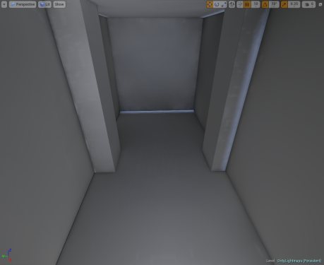
Medium
-
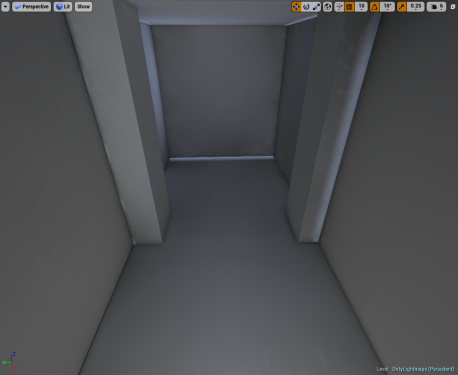
High
-

Production
In this example it’s easy to see the difference between the default Preview setting and Production setting. With Production almost all of the light leaking that was prevalent in the previous quality settings is gone. This is a good way to troubleshoot your lighting issues if there is light leaking. If Production doesn’t get rid of the light leaking then it’s time to have a look at how the lightmap UVs are set up or possibly the placement of the meshes in your level.
With the Statue static mesh in this scene it’s not as easily noticeable that the shadow quality has been adjusted. There is slight differences in quality, but not enough to tell with the particular object.
- Light Quality Settings, Organic Lines
-

Preview
-

Medium
-

High
-

Production

In this animated Gif the quality differences are minuscule from this perspective. This behavior is expected for more organic shapes. The human eye notices non-organic straight lines (like Architectural right angles) before curved or more organic shapes given the same color and brightness. As a note, the jaggedness of the shadows on the ground plane are the result of having a lower lightmap resolution for a larger mesh. Increasing the lightmap resolution will improve the quality of the shadow definition.
_________________________________________________________________________________________________
Lightmap Error Coloring
This option can be enabled via the Build Menu drop-down when you select Use Error Coloring and are using Lighting Quality settings for Preview or Medium.
When lightmass encounters an error it will color the type of error so that it’s easily identifiable. Below are the color types that will be reflected for the type of issue you have.
- Orange: This is caused by non-unique or overlapping UVs.
- Green: This is caused by having wrapping UVs or UVs that are outside of the 0,1 UV space.
- Yellow: These are unmapped texels that either have zero lightmap area or in the case of BSPs may be too low of a lightmap resolution.
You can see more information in the UE3 documentation that still applies: https://udn.epicgames.com/Three/LightmassTools.html#Lightmap error colors
_________________________________________________________________________________________________
Find the Objects referenced in "Lighting needs to be rebuilt (X Objects)"
Sometimes you may have an issue where lighting is continually being invalidated or you may have tweaked something in your level and not realized it leaving you with this dreaded “Lighting needs to be rebuilt ([number] objects)” but no easily identifiable way to see what the “[number] objects” are.
Luckily we have an easy way for you to get this information to help you better track, investigate, and resolve your issue(s) with lighting being invalidated.
- Start by opening the Output Log window by going to Window > Developer Tools > Output Log.
- Bring up the Console by using the ` (tilde) key and enter in the command DumpUnbuiltLightInteractions
So why is this really useful?
- You can quickly identify the Actors that are causing the warning to appear.
- You may have an Actor that is static that is being built and then moved by using code or Blueprints that causes the warning to appear.
- Instanced meshes with lots of instances and high lightmap resolutions may not build properly because the clustered instances lightmap doesn’t get generated. This can identify that need to lower the lightmap resolution.
- In some instances using a Construction Script to generate mesh placement via Blueprint will have become invalidated when moving the mesh if the lighting was previously built. This command can quickly identify this as well.
_________________________________________________________________________________________________
Light Build Statistics
The Statistics window available in the editor is a good way to check the statistics for your level once the light build has completed. This window can give good stats to help narrow down what actors were taking the longest for the scene and how much time was spent calculating the lighting for this actor and it’s lightmap resolution.
This window was taken from a light build of Sun Temple that is available in the Epic Games Launcher via the Learn tab.
All of the information contained within the Lighting Build Info and Static Mesh Lighting Info can be helpful to help you optimize, investigate, and troubleshoot your lighting builds.
This information can also be found in the documentation here: https://docs.unrealengine.com/latest/INT/Engine/Rendering/LightingAndShadows/Lightmass/#gettingthebestlightingbuildtimes
_________________________________________________________________________________________________
Landscape Grasstype Asset Tiled Pattern
There is a little known feature hidden within the Landscape Grasstype asset that you may or may not be aware of. This allows you to use the landscape’s lightmap to get a better blend for the procedural landscape grass material by referencing its indirect lighting cache samples.
You can enable it by setting the checkbox for Use Landscape Lightmap.
This feature was originally developed with the intent for dynamically lit environments, but when using stationary or statically lit environments you’ll see the pattern of that is generated from the tiled components of the landscape’s indirect lighting, which can be rather distracting.
- Landscape Grasstype Use Landscape Lightmap
-
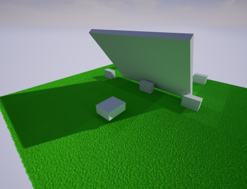
Disabled
-
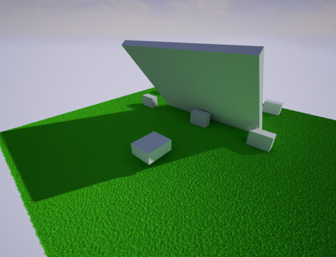
Enabled
Once you enable or disable the option for Use Landscape Lightmap the material will be regenerated without the need to rebuild lighting, so long as it has already been built.
_________________________________________________________________________________________________
Build Lighting Via Command Line
If you have a need to build lighting via command line this has been added as of 4.10.2.
In order to build lighting by command line use the following structure to set it up as a basis:
- UE4-Editor.exe [Project Folder Path] -run=resavepackages -buildlighting -MapsOnly -ProjectOnly -AllowCommandletRendering -Map=[Name of map] -Messaging
The -Map=[Map Name] can be dropped if you want it to build all the maps/levels available in the project.
You can find some additional details in the commit here via GitHub: https://github.com/EpicGames/UnrealEngine/commit/f89256dd0efb7d0b1427729a8f8a6007
If you see a 404 error page, you’ll need to make sure that you have an account with GitHub and that your Epic account is linked with GitHub’s.
_________________________________________________________________________________________________
Foliage Tool Lightmap Resolutions
When using the foliage tool you have a few different settings available to you in the tools panel for the selected actor. One important one is the option to override the Lightmap Resolution of the mesh.

By default this option is disabled, which means that the static meshes own lightmap resolution will be used.
You may be thinking “why is this a bad thing? Don’t I want to have a good lightmap resolution for nice baked shadows?”, but the problem here is that when you use the Foliage tool these are not individually placed actors that get their own lightmap. These are all clustered instances where the clusters will be baked down into a single lightmap together.
If you have a lot of instances and proceed to build with the static meshes default lightmap resolution you are more likely to be met with a warning that “Instanced_Foliage_Actor_[X] lightmap is too large and should be reduced.” This is a clear indication that the lightmap resolution is too high. You should enable the option above and try a lower resolution like 8 or 4 before you try rebuilding.
As a general good practice though you should do the following:
- Limit the use of static lighting on foliage if you are going to have the trees/grass sway in the wind. It looks unnatural for the foliage to move, but the shadow does not.
- Reduce the lightmap resolution of foliage to a manageable size.
- Disable static lighting on grass. This is a general good practice to have since these instances will likely number in the thousands depending on your level and it will significantly increase the light build time in most cases.
_________________________________________________________________________________________________